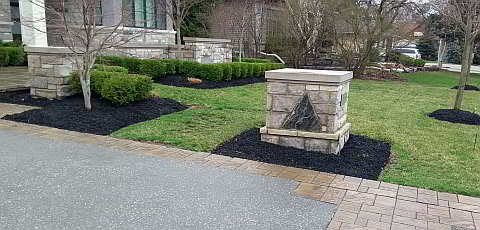

Spring Yard Cleanup
Starts as soon as the snow has melted and the ground is dry, usually around the last week of March. An average spring cleanup takes 2 to 4 hours.
What's included
- Detailed raking and power blowing to get your lawn ready for spring growth and its first cut
- Removing leftover fall leaves from all areas of your yard
- Cutting down old perennials and hostas, careful not to step on new spring buds
- A crisp new edge on your flower beds, then a fresh layer of mulch to help hold back weeds
- Thinning overgrown perennials and digging out dead shrubs with their roots
- Turning over garden soil if you wish
- Power raking with our gas-powered rake machine, ready for spring fertilizer and overseeding
- Bagging all yard and garden debris, and taking broken items to the dump
We also do complete yard cleanups any time between spring and fall, including for people who have just moved in or are getting a house ready to sell.